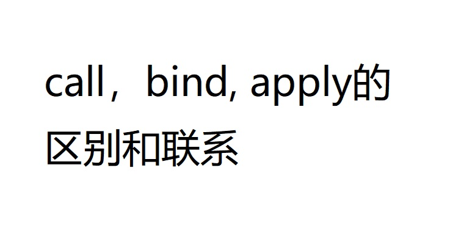

<!DOCTYPE html>
<html>
<head><meta name="generator" content="Hexo 3.9.0">
  <meta charset="utf-8">

  <!-- PACE Progress Bar START -->
  
    <script src="https://raw.githubusercontent.com/HubSpot/pace/v1.0.2/pace.min.js"></script>
    <link rel="stylesheet" href="https://github.com/HubSpot/pace/raw/master/themes/orange/pace-theme-flash.css">
  
  

  <!-- PACE Progress Bar START -->

  
  <title>call,bind,apply方法区别与应用 | Zhiyu&#39;s blog</title>
  <meta name="viewport" content="width=device-width, initial-scale=1, maximum-scale=1">
  
  <meta name="keywords" content="Java script">
  
  
  
  
  <meta name="description" content="JavaScript 为我们专门提供了一些函数方法来帮我们更优雅的处理函数内部this的指向问题，常用的有call()、apply() 、bind()三种方法。我总结了这三种方法的相同点和不同点">
<meta name="keywords" content="Java script">
<meta property="og:type" content="article">
<meta property="og:title" content="call,bind,apply方法区别与应用">
<meta property="og:url" content="https://zhiyuXiao1221.github.io/2020/07/24/call-bink-apply方法区别与应用/index.html">
<meta property="og:site_name" content="Zhiyu&#39;s blog">
<meta property="og:description" content="JavaScript 为我们专门提供了一些函数方法来帮我们更优雅的处理函数内部this的指向问题，常用的有call()、apply() 、bind()三种方法。我总结了这三种方法的相同点和不同点">
<meta property="og:locale" content="en">
<meta property="og:image" content="https://zhiyuxiao1221.github.io/2020/07/24/call-bink-apply方法区别与应用/gallery/call-applly-bind.jpg">
<meta property="og:updated_time" content="2020-07-24T07:20:37.092Z">
<meta name="twitter:card" content="summary">
<meta name="twitter:title" content="call,bind,apply方法区别与应用">
<meta name="twitter:description" content="JavaScript 为我们专门提供了一些函数方法来帮我们更优雅的处理函数内部this的指向问题，常用的有call()、apply() 、bind()三种方法。我总结了这三种方法的相同点和不同点">
<meta name="twitter:image" content="https://zhiyuxiao1221.github.io/2020/07/24/call-bink-apply方法区别与应用/gallery/call-applly-bind.jpg">
  
    <link rel="alternate" href="/atom.xml" title="Zhiyu&#39;s blog" type="application/atom+xml">
  
  <link rel="icon" href="/css/images/favicon.ico">
  
    <link href="//fonts.googleapis.com/css?family=Source+Code+Pro" rel="stylesheet" type="text/css">
  
  <link href="https://fonts.googleapis.com/css?family=Open+Sans|Montserrat:700" rel="stylesheet" type="text/css">
  <link href="https://fonts.googleapis.com/css?family=Roboto:400,300,300italic,400italic" rel="stylesheet" type="text/css">
  <link href="https://cdn.bootcss.com/font-awesome/4.6.3/css/font-awesome.min.css" rel="stylesheet">
  <style type="text/css">
    @font-face{font-family:futura-pt;src:url(https://use.typekit.net/af/9749f0/00000000000000000001008f/27/l?subset_id=2&fvd=n5) format("woff2");font-weight:500;font-style:normal;}
    @font-face{font-family:futura-pt;src:url(https://use.typekit.net/af/90cf9f/000000000000000000010091/27/l?subset_id=2&fvd=n7) format("woff2");font-weight:500;font-style:normal;}
    @font-face{font-family:futura-pt;src:url(https://use.typekit.net/af/8a5494/000000000000000000013365/27/l?subset_id=2&fvd=n4) format("woff2");font-weight:lighter;font-style:normal;}
    @font-face{font-family:futura-pt;src:url(https://use.typekit.net/af/d337d8/000000000000000000010095/27/l?subset_id=2&fvd=i4) format("woff2");font-weight:400;font-style:italic;}</style>
    
  <link rel="stylesheet" id="athemes-headings-fonts-css" href="//fonts.googleapis.com/css?family=Yanone+Kaffeesatz%3A200%2C300%2C400%2C700&amp;ver=4.6.1" type="text/css" media="all">
  <link rel="stylesheet" href="../../../../css/style.css">

  <script src="https://code.jquery.com/jquery-3.1.1.min.js"></script>

  <!-- Bootstrap core CSS -->
  <link rel="stylesheet" href="https://netdna.bootstrapcdn.com/bootstrap/3.0.2/css/bootstrap.min.css">
  <link rel="stylesheet" href="/css/hiero.css">
  <link rel="stylesheet" href="/css/glyphs.css">
  
    <link rel="stylesheet" href="/css/vdonate.css">
  

  <!-- Custom CSS -->
  <link rel="stylesheet" href="../../../../css/my.css">
  <!-- Google Adsense -->
  
  <script async src="//pagead2.googlesyndication.com/pagead/js/adsbygoogle.js"></script>
  <script>
      (adsbygoogle = window.adsbygoogle || []).push({
          google_ad_client: "ca-pub-0123456789ABCDEF",
          enable_page_level_ads: true
      });
  </script>
  
</head>
</html>
<script>
var themeMenus = {};

  themeMenus["../../../../index.html"] = "Home"; 

  themeMenus["../../../../archives"] = "Archives"; 

  themeMenus["../../../../categories"] = "Categories"; 

  themeMenus["../../../../tags"] = "Tags"; 

  themeMenus["../../../../about"] = "About"; 

</script>


  <body data-spy="scroll" data-target="#toc" data-offset="50">


  <header id="allheader" class="site-header" role="banner">
  <div class="clearfix container">
      <div class="site-branding">

          <h1 class="site-title">
            
              <a href="/" title="Zhiyu&#39;s blog" rel="home"> Zhiyu&#39;s blog </a>
            
          </h1>

          
            <div class="site-description">Have a down-to-earth attitude.</div>
          
            
          <nav id="main-navigation" class="main-navigation" role="navigation">
            <a class="nav-open">Menu</a>
            <a class="nav-close">Close</a>
            <div class="clearfix sf-menu">

              <ul id="main-nav" class="nmenu sf-js-enabled">
                    
                      <li class="menu-item menu-item-type-custom menu-item-object-custom menu-item-home menu-item-1663"> <a class="" href="../../../../index.html">Home</a> </li>
                    
                      <li class="menu-item menu-item-type-custom menu-item-object-custom menu-item-home menu-item-1663"> <a class="" href="../../../../archives">Archives</a> </li>
                    
                      <li class="menu-item menu-item-type-custom menu-item-object-custom menu-item-home menu-item-1663"> <a class="" href="../../../../categories">Categories</a> </li>
                    
                      <li class="menu-item menu-item-type-custom menu-item-object-custom menu-item-home menu-item-1663"> <a class="" href="../../../../tags">Tags</a> </li>
                    
                      <li class="menu-item menu-item-type-custom menu-item-object-custom menu-item-home menu-item-1663"> <a class="" href="../../../../about">About</a> </li>
                    
              </ul>
            </div>
          </nav>


      </div>
  </div>
</header>


  <div id="originBgDiv" style="background: #fff; width: 100%;">

      <div style="max-height:600px; overflow: hidden;  display: flex; display: -webkit-flex; align-items: center;">
        
      </div>

  </div>

  <script>
  function setAboutIMG(){
      var imgUrls = "css/images/pose.jpg,https://source.unsplash.com/collection/954550/1920x1080".split(",");
      var random = Math.floor((Math.random() * imgUrls.length ));
      if (imgUrls[random].startsWith('http') || imgUrls[random].indexOf('://') >= 0) {
        document.getElementById("originBg").src=imgUrls[random];
      } else {
        document.getElementById("originBg").src='/' + imgUrls[random];
      }
  }
  bgDiv=document.getElementById("originBgDiv");
  if(location.pathname.match('about')){
    setAboutIMG();
    bgDiv.style.display='block';
  }else{
    bgDiv.style.display='none';
  }
  </script>


  <div id="container">
    <div id="wrap">
            
      <div id="content" class="outer">
        
          <section id="main" style="float:none;"><article id="post-call-bink-apply方法区别与应用" style="width: 66%; float:left;" class="article article-type-post" itemscope itemprop="blogPost" >
  <div id="articleInner" class="clearfix post-1016 post type-post status-publish format-standard has-post-thumbnail hentry category-template-2 category-uncategorized tag-codex tag-edge-case tag-featured-image tag-image tag-template">
    
<div class="article-gallery">
  <div class="article-gallery-photos">
    
      <a class="article-gallery-img fancybox" href="../../../../gallery/call-applly-bind.jpg" rel="gallery_ckd14bod700164ov0wd9vnbpb">
        
      </a>
    
  </div>
</div>

    
      <header class="article-header">
        
  
    <h1 class="thumb" class="article-title" itemprop="name">
      call,bind,apply方法区别与应用
    </h1>
  

      </header>
    
    <div class="article-meta">
      
	Posted on <a href="" class="article-date">
	  <time datetime="2020-07-24T06:32:47.000Z" itemprop="datePublished">July 24, 2020</time>
	</a>

      
	<span id="busuanzi_container_page_pv">
	  本文总阅读量<span id="busuanzi_value_page_pv"></span>次
	</span>

    </div>
    <div class="article-entry" itemprop="articleBody">
      
        <p>JavaScript 为我们专门提供了一些函数方法来帮我们更优雅的处理函数内部this的指向问题，常用的有call()、apply() 、bind()三种方法。<br>我总结了这三种方法的相同点和不同点</p>
<a id="more"></a>
<h2 id="一、this指向"><a href="#一、this指向" class="headerlink" title="一、this指向"></a>一、this指向</h2><table>
<thead>
<tr>
<th style="text-align:center">调用方式</th>
<th style="text-align:center">this指向</th>
</tr>
</thead>
<tbody>
<tr>
<td style="text-align:center">普通函数调用</td>
<td style="text-align:center">window</td>
</tr>
<tr>
<td style="text-align:center">构造函数调用</td>
<td style="text-align:center">实例对象，原型对象的方法也指向实例对象</td>
</tr>
<tr>
<td style="text-align:center">对象方法调用</td>
<td style="text-align:center">该方法所属于对象</td>
</tr>
<tr>
<td style="text-align:center">时间绑定方法</td>
<td style="text-align:center">绑定时间对象</td>
</tr>
<tr>
<td style="text-align:center">定时器函数</td>
<td style="text-align:center">window</td>
</tr>
<tr>
<td style="text-align:center">立即执行函数</td>
<td style="text-align:center">window</td>
</tr>
</tbody>
</table>
<h2 id="二、改变this指向的几种方法"><a href="#二、改变this指向的几种方法" class="headerlink" title="二、改变this指向的几种方法"></a>二、改变this指向的几种方法</h2><h3 id="1-call方法"><a href="#1-call方法" class="headerlink" title="1.call方法"></a>1.call方法</h3><p>一般就是上下文中thisArs所指向的对象不是该函数的调用者，我们依旧想调用这个函数就可以使用call方法，比如继承</p>
<p><strong>方式：fun.call(thisArg, arg1, arg2, …)；</strong></p>
<figure class="highlight javascript"><table><tr><td class="gutter"><pre><span class="line">1</span><br><span class="line">2</span><br><span class="line">3</span><br><span class="line">4</span><br><span class="line">5</span><br><span class="line">6</span><br><span class="line">7</span><br><span class="line">8</span><br><span class="line">9</span><br><span class="line">10</span><br><span class="line">11</span><br><span class="line">12</span><br><span class="line">13</span><br><span class="line">14</span><br></pre></td><td class="code"><pre><span class="line"><span class="function"><span class="keyword">function</span> <span class="title">Father</span> (<span class="params">uname,age</span>) </span>&#123;</span><br><span class="line">			<span class="comment">// this指向父类的实例对象</span></span><br><span class="line">			<span class="keyword">this</span>.uname = uname;</span><br><span class="line">			<span class="keyword">this</span>.age = age;</span><br><span class="line">			<span class="comment">// 只要把父类的this指向子类的this既可</span></span><br><span class="line">		&#125;</span><br><span class="line">		<span class="function"><span class="keyword">function</span> <span class="title">Son</span> (<span class="params">uname, age,score</span>) </span>&#123;</span><br><span class="line">			<span class="comment">// this指向子类构造函数</span></span><br><span class="line">			<span class="comment">// this.uname = uname;</span></span><br><span class="line">			<span class="comment">// this.age = age;</span></span><br><span class="line">			<span class="comment">// Father(uname,age);</span></span><br><span class="line">			Father.call(<span class="keyword">this</span>,uname,age);</span><br><span class="line">			<span class="keyword">this</span>.score = score;</span><br><span class="line">		&#125;</span><br></pre></td></tr></table></figure>
<h3 id="2-apply方法"><a href="#2-apply方法" class="headerlink" title="2.apply方法"></a>2.apply方法</h3><p>apply方法和call类似，只是传参数的时候不是一个一个传进去，而是以数组的形式传递。如果不想改变this指向，就传递null到函数中</p>
<p><strong>方式：fun.apply(thisArg, [argsArray])</strong> </p>
<figure class="highlight javascript"><table><tr><td class="gutter"><pre><span class="line">1</span><br><span class="line">2</span><br><span class="line">3</span><br><span class="line">4</span><br></pre></td><td class="code"><pre><span class="line"><span class="keyword">var</span> arr = [<span class="number">23</span>,<span class="number">45</span>,<span class="number">56</span>,<span class="number">23</span>,<span class="number">54</span>];</span><br><span class="line"><span class="comment">//Math.max()方法本来是需要传递一系列参数的，Math,max(1,9,3),调用apply则传递数组</span></span><br><span class="line"><span class="keyword">var</span> n = <span class="built_in">Math</span>.max.apply(<span class="literal">null</span>,arr);</span><br><span class="line"><span class="built_in">console</span>.log(n);</span><br></pre></td></tr></table></figure>
<h3 id="3-bind方法"><a href="#3-bind方法" class="headerlink" title="3.bind方法"></a>3.bind方法</h3><p>bind() 方法不会调用函数。但是能改变函数内部this 指向，也就是说想调用还需要再次调用，在后面加上（)。</p>
<p><strong>方式：fun.bind(thisArg, arg1, arg2, …);</strong></p>
<p>fs.call(this,a,b)和fs.bind(this,a,b)()是等价的，需要注意第二个后面多了一个()，表示立马执行</p>
<p>实现一个点击某按钮，禁止该按钮，2s后该按钮又不被禁止的功能，可以使用bind函数改变定时器this指向，因为定时器this默认是指向window，所以需要改变指针指向，同时定时器每隔一段时间都会自动触发，所以采用bind只改变定时器指针而不立即执行代码</p>
<figure class="highlight javascript"><table><tr><td class="gutter"><pre><span class="line">1</span><br><span class="line">2</span><br><span class="line">3</span><br><span class="line">4</span><br><span class="line">5</span><br><span class="line">6</span><br><span class="line">7</span><br></pre></td><td class="code"><pre><span class="line"><span class="keyword">var</span> btn = <span class="built_in">document</span>.querySelector(<span class="string">'input'</span>);</span><br><span class="line">	btn.onclick = <span class="function"><span class="keyword">function</span> (<span class="params"></span>) </span>&#123;</span><br><span class="line">		<span class="keyword">this</span>.disabled = <span class="literal">true</span>;</span><br><span class="line">		<span class="built_in">window</span>.setTimeout(<span class="function"><span class="keyword">function</span> (<span class="params"></span>) </span>&#123;</span><br><span class="line">			<span class="keyword">this</span>.disabled = <span class="literal">false</span>;</span><br><span class="line">		&#125;.bind(btn),<span class="number">2000</span>);</span><br><span class="line">&#125;</span><br></pre></td></tr></table></figure>
<h2 id="三、3种方法总结"><a href="#三、3种方法总结" class="headerlink" title="三、3种方法总结"></a>三、3种方法总结</h2><table>
<thead>
<tr>
<th>方法</th>
<th>调用方式</th>
<th>区别</th>
</tr>
</thead>
<tbody>
<tr>
<td>call()</td>
<td>fun.call(obj,arg1,arg2……)</td>
<td>传递的参数不一样, call 传递参数aru1, aru2..</td>
</tr>
<tr>
<td>apply()</td>
<td>fun.apply(obj,[a,b,c])</td>
<td>apply 必须数组形式[arg]</td>
</tr>
<tr>
<td>bind()</td>
<td>fun.bind(obj,arg1,arg2……)</td>
<td>不会调用函数, 可以改变函数内部this指向</td>
</tr>
</tbody>
</table>
<p><strong>主要应用场景:</strong>  </p>
<ul>
<li>cal经常做继承. </li>
<li>apply 经常跟数组有关系.比如借助于数学对象实现数组最大值最小值</li>
<li>不调用函数,但是还想改变this指向. 比如改变定时器内部的this指向</li>
</ul>

      
    </div>
    <footer class="entry-meta entry-footer">
      
	<span class="ico-folder"></span>
    <a class="article-category-link" href="../../../../categories/前端/">前端</a>

      
  <span class="ico-tags"></span>
  <ul class="article-tag-list"><li class="article-tag-list-item"><a class="article-tag-list-link" href="../../../../tags/Java-script/">Java script</a></li></ul>

      
        <div id="donation_div"></div>

<script src="../../../../js/vdonate.js"></script>
<script>
var a = new Donate({
  title: '如果觉得我的文章对您有用，请随意打赏。您的支持将鼓励我继续创作!', // 可选参数，打赏标题
  btnText: 'Donate', // 可选参数，打赏按钮文字
  el: document.getElementById('donation_div'),
  wechatImage: 'https://raw.githubusercontent.com/iTimeTraveler/iTimeTraveler.github.io/site/source/about/donate/images/WeChanQR.png',
  alipayImage: 'https://raw.githubusercontent.com/iTimeTraveler/iTimeTraveler.github.io/site/source/about/donate/images/AliPayQR.jpg'
});
</script>
      
            
      
        
	<div id="comment">
		<!-- 来必力City版安装代码 -->
		<div id="lv-container" data-id="city" data-uid="MTAyMC8yOTQ4MS82MDQ5">
		<script type="text/javascript">
		   (function(d, s) {
		       var j, e = d.getElementsByTagName(s)[0];

		       if (typeof LivereTower === 'function') { return; }

		       j = d.createElement(s);
		       j.src = 'https://cdn-city.livere.com/js/embed.dist.js';
		       j.async = true;

		       e.parentNode.insertBefore(j, e);
		   })(document, 'script');
		</script>
		<noscript>为正常使用来必力评论功能请激活JavaScript</noscript>
		</div>
		<!-- City版安装代码已完成 -->
	</div>


      
    </footer>
  </div>
  
    
<nav id="article-nav">
  
  
    <a href="../../23/ES5以及ES6构造和继承的对比/" id="article-nav-older" class="article-nav-link-wrap">
      <strong class="article-nav-caption">Older</strong>
      <div class="article-nav-title">ES5和ES6类构造和继承的对比</div>
    </a>
  
</nav>

  
</article>

<!-- Table of Contents -->

  <aside id="sidebar">
    <div id="toc" class="toc-article" style="overflow-y: scroll; max-width: 28%;">
    <strong class="toc-title">Contents</strong>
    
      <ol class="nav"><li class="nav-item nav-level-2"><a class="nav-link" href="#一、this指向"><span class="nav-number">1.</span> <span class="nav-text">一、this指向</span></a></li><li class="nav-item nav-level-2"><a class="nav-link" href="#二、改变this指向的几种方法"><span class="nav-number">2.</span> <span class="nav-text">二、改变this指向的几种方法</span></a><ol class="nav-child"><li class="nav-item nav-level-3"><a class="nav-link" href="#1-call方法"><span class="nav-number">2.1.</span> <span class="nav-text">1.call方法</span></a></li><li class="nav-item nav-level-3"><a class="nav-link" href="#2-apply方法"><span class="nav-number">2.2.</span> <span class="nav-text">2.apply方法</span></a></li><li class="nav-item nav-level-3"><a class="nav-link" href="#3-bind方法"><span class="nav-number">2.3.</span> <span class="nav-text">3.bind方法</span></a></li></ol></li><li class="nav-item nav-level-2"><a class="nav-link" href="#三、3种方法总结"><span class="nav-number">3.</span> <span class="nav-text">三、3种方法总结</span></a></li></ol>
    
    </div>
  </aside>
</section>
        
      </div>
      <footer id="footer" class="site-footer">
  

  <div class="clearfix container">
      <div class="site-info">
	      &copy; 2020 Zhiyu&#39;s blog All Rights Reserved.
          
            <span id="busuanzi_container_site_uv">
              本站访客数<span id="busuanzi_value_site_uv"></span>人次  
              本站总访问量<span id="busuanzi_value_site_pv"></span>次
            </span>
          
      </div>
      <div class="site-credit">
        Theme by <a href="https://github.com/iTimeTraveler/hexo-theme-hiero" target="_blank">hiero</a>
      </div>
  </div>
</footer>


<!-- min height -->

<script>
    var contentdiv = document.getElementById("content");

    contentdiv.style.minHeight = document.body.offsetHeight - document.getElementById("allheader").offsetHeight - document.getElementById("footer").offsetHeight + "px";
</script>

<!-- Custome JS -->
<script src="../../../../js/my.js"></script>
    </div>
    <!-- <nav id="mobile-nav">
  
    <a href="../../../../index.html" class="mobile-nav-link">Home</a>
  
    <a href="../../../../archives" class="mobile-nav-link">Archives</a>
  
    <a href="../../../../categories" class="mobile-nav-link">Categories</a>
  
    <a href="../../../../tags" class="mobile-nav-link">Tags</a>
  
    <a href="../../../../about" class="mobile-nav-link">About</a>
  
</nav> -->
    

<!-- mathjax config similar to math.stackexchange -->

<script type="text/x-mathjax-config">
  MathJax.Hub.Config({
    tex2jax: {
      inlineMath: [ ['$','$'], ["\\(","\\)"] ],
      processEscapes: true
    }
  });
</script>

<script type="text/x-mathjax-config">
    MathJax.Hub.Config({
      tex2jax: {
        skipTags: ['script', 'noscript', 'style', 'textarea', 'pre', 'code']
      }
    });
</script>

<script type="text/x-mathjax-config">
    MathJax.Hub.Queue(function() {
        var all = MathJax.Hub.getAllJax(), i;
        for(i=0; i < all.length; i += 1) {
            all[i].SourceElement().parentNode.className += ' has-jax';
        }
    });
</script>

<script type="text/javascript" src="https://cdnjs.cloudflare.com/ajax/libs/mathjax/2.7.4/MathJax.js?config=TeX-AMS-MML_HTMLorMML">
</script>


  <link rel="stylesheet" href="https://cdnjs.cloudflare.com/ajax/libs/fancybox/2.1.5/jquery.fancybox.min.css">
  <script src="https://cdnjs.cloudflare.com/ajax/libs/fancybox/2.1.5/jquery.fancybox.min.js"></script>


<script src="../../../../js/scripts.js"></script>
<script src="https://stackpath.bootstrapcdn.com/bootstrap/3.3.7/js/bootstrap.min.js"></script>
<script src="../../../../js/main.js"></script>


  <div style="display: none;">
    <script src="https://s95.cnzz.com/z_stat.php?id=1260716016&web_id=1260716016" language="JavaScript"></script>
  </div>


	<script async src="https://dnqof95d40fo6.cloudfront.net/atw7f8.js">
	</script>


  </div>

  <a id="rocket" href="#top" class=""></a>
  <script type="text/javascript" src="/js/totop.js" async=""></script>
</body>
</html>
